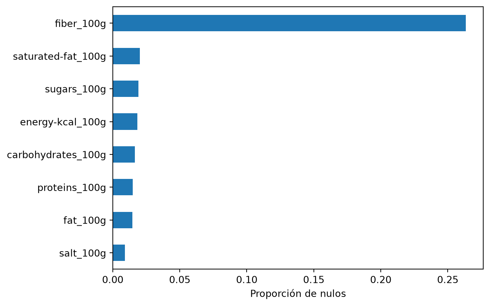
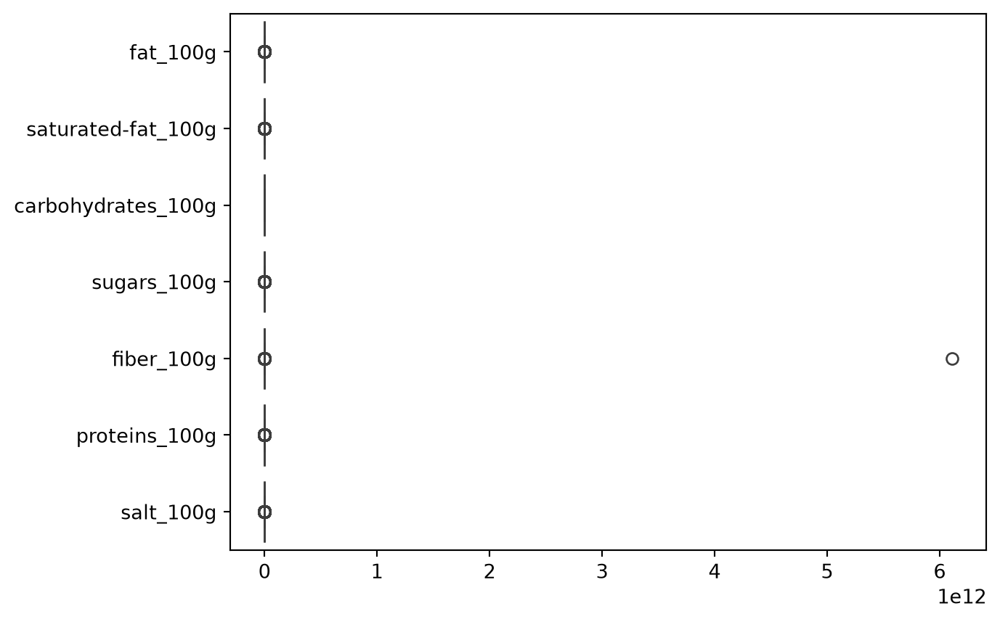
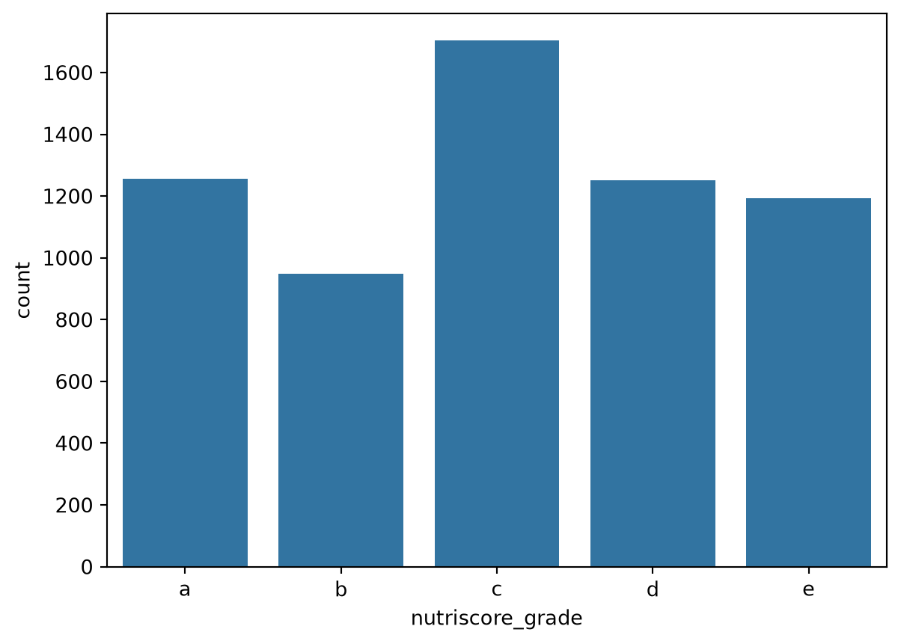
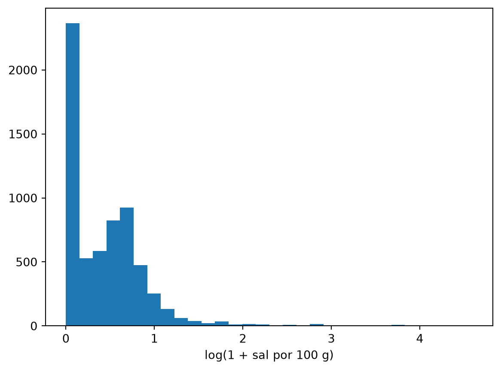
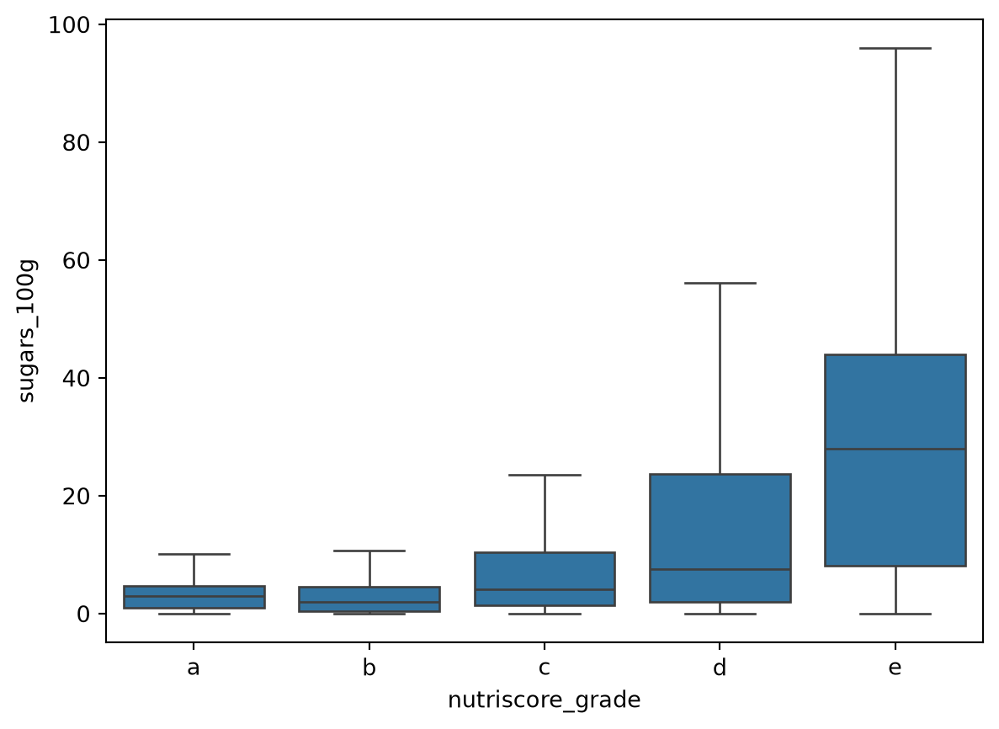
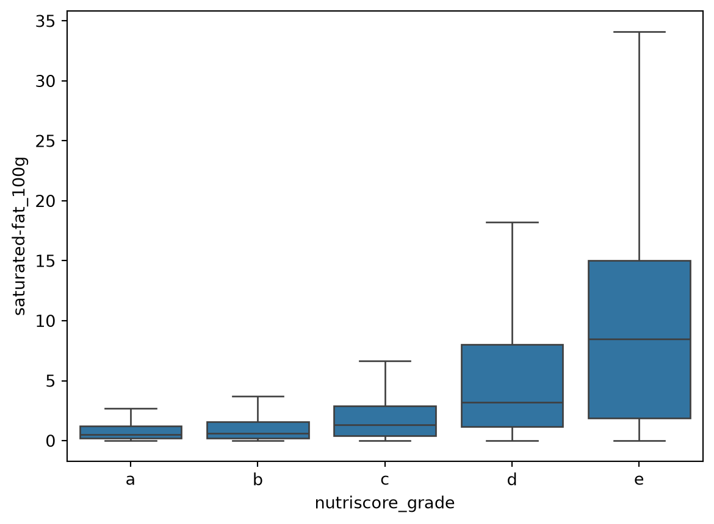
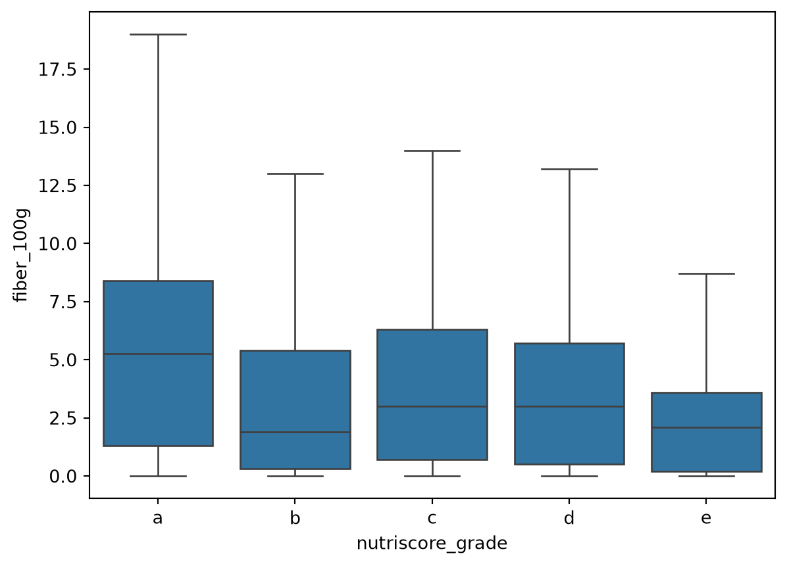
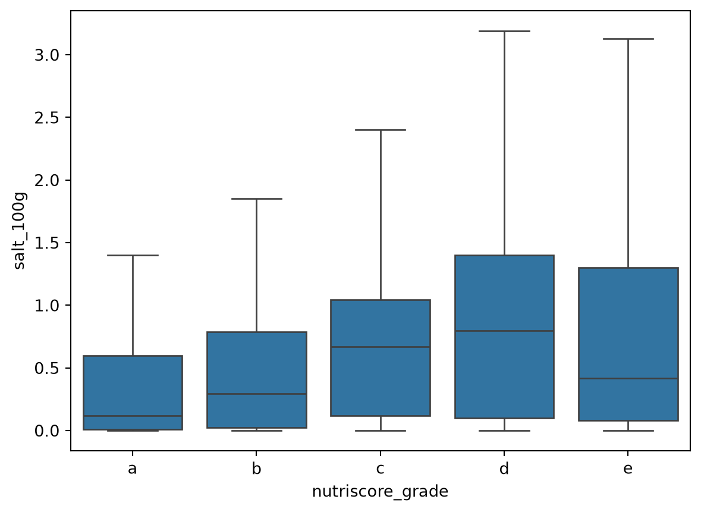

import pandas as pd
import numpy as np
import matplotlib.pyplot as plt
import seaborn as sns
df = pd.read_csv("data/raw/openfoodfacts_nutrition_final_2025-12-10.csv")
df.shape(9804, 20)Cargamos el CSV de Open Food Facts con pandas.
(9804, 20)Observamos los valores que hay en la tabla CSV sin limpiar y nos ponemos manos a la obra.
Las primeras filas nos enseñan qué contiene cada columna.
| code | product_name | brands | countries | quantity | categories | labels | nutriscore_grade | ecoscore_grade | nova_group | ingredients_text | energy-kcal_100g | fat_100g | saturated-fat_100g | carbohydrates_100g | sugars_100g | fiber_100g | proteins_100g | salt_100g | sodium_100g | |
|---|---|---|---|---|---|---|---|---|---|---|---|---|---|---|---|---|---|---|---|---|
| 0 | 6111035000430 | Sidi Ali | سيدي علي | Morocco | 33 cl | Beverages and beverages preparations,Beverages... | NaN | a | not-applicable | NaN | OBD1 999 999 1112606 266963207 mb | 0.0 | 0.0 | 0.0 | 4.2 | 1.4 | 0.0 | 0.0 | 0.000000 | 0.000000 |
| 1 | 6111242100992 | perly | perly | Morocco,United States | 100 g | Dairies,Fermented foods,Fermented milk product... | NaN | unknown | b | 3.0 | milk cream, cream, sugar, banana, bacteria | 97.0 | 3.0 | NaN | 9.4 | NaN | NaN | 8.0 | NaN | NaN |
| 2 | 6111035002175 | Sidi Ali | Sidi Ali | Morocco | 2 L | Beverages and beverages preparations,Beverages... | Green Dot | a | not-applicable | 1.0 | Sodium, Calcium, Magnésium, Potassium, Bicarbo... | NaN | NaN | NaN | NaN | NaN | NaN | NaN | 0.065000 | 0.026000 |
| 3 | 6111035000058 | Eau minérale naturelle | Les Eaux Minérales d'oulmès,Sidi Ali | Morocco | 1,5 L | Beverages and beverages preparations,Beverages... | ISO 22000,ISO 14001,ISO 45001,ISO 9001 | a | not-applicable | 1.0 | 100% mineral water | NaN | NaN | NaN | NaN | NaN | NaN | NaN | 0.065000 | 0.026000 |
| 4 | 6111252421568 | اكوافينا | AQUAFINA | المغرب | 33cl | Boissons et préparations de boissons,Boissons,... | NaN | a | not-applicable | NaN | ouverture et avant le : Voir bouteille. après ... | 0.0 | 0.0 | 0.0 | 0.0 | 0.0 | 0.0 | 0.0 | 0.000508 | 0.000203 |
De esta manera sabemos cómo es la tabla, qué valores queremos preservar y de cuáles prescindir, por ejemplo la cantidad de azúcares, grasas, sal, proteínas, etc.
Contamos cuántos productos hay de cada letra del Nutri-Score.
nutriscore_grade
c 2204
e 1890
d 1787
a 1579
b 1245
unknown 804
not-applicable 292
NaN 3
Name: count, dtype: int64En este caso hay valores que no queremos, como unknown o NaN, por lo que nos quedamos solo con los productos que tienen una letra válida, de la a a la e.
Esta es la cantidad de productos con la que nos quedamos. Ahora toca limpiar los valores vacíos, los valores sin sentido (extremos que son imposibles, por ejemplo un producto de más de 900 kcal, imposible porque la propia grasa tiene 900 y no hay nada con más) y los productos repetidos.
Usamos los ocho nutrientes por 100 g como variables explicativas y la letra como objetivo.
Index(['energy-kcal_100g', 'fat_100g', 'saturated-fat_100g',
'carbohydrates_100g', 'sugars_100g', 'fiber_100g', 'proteins_100g',
'salt_100g', 'nutriscore_grade'],
dtype='str')Calculamos qué porcentaje de cada nutriente está vacío.

La fibra es la columna con más nulos: le falta a un 26 % de los productos. En el resto de nutrientes ronda el 1-2 %.
Eliminamos las filas a las que les falta algún nutriente, ya que no vamos a inventarnos datos: preferimos ceñirnos a los datos ya recogidos. De esta manera es más fiable entrenar al modelo y evitamos errores.
Con describe() podemos ver el mínimo y el máximo de cada nutriente, además de otros baremos.
| energy-kcal_100g | fat_100g | saturated-fat_100g | carbohydrates_100g | sugars_100g | fiber_100g | proteins_100g | salt_100g | |
|---|---|---|---|---|---|---|---|---|
| count | 6360.000000 | 6360.000000 | 6360.000000 | 6360.000000 | 6360.000000 | 6.360000e+03 | 6360.000000 | 6360.000000 |
| mean | 308.240450 | 14.746252 | 4.525515 | 34.513354 | 11.767583 | 9.608871e+08 | 7.595805 | 0.969404 |
| std | 205.685187 | 18.488456 | 7.878694 | 27.519179 | 16.875208 | 7.663037e+10 | 6.480944 | 3.551491 |
| min | 0.000000 | 0.000000 | 0.000000 | 0.000000 | 0.000000 | 0.000000e+00 | 0.000000 | 0.000000 |
| 25% | 123.000000 | 1.700000 | 0.300000 | 7.077500 | 1.400000 | 5.200000e-01 | 3.000000 | 0.050000 |
| 50% | 326.000000 | 7.500000 | 1.400000 | 32.200000 | 4.300000 | 2.900000e+00 | 6.800000 | 0.480000 |
| 75% | 454.000000 | 21.000000 | 5.300000 | 60.300000 | 15.700000 | 6.200000e+00 | 10.000000 | 0.990000 |
| max | 5280.000000 | 140.000000 | 100.000000 | 115.000000 | 113.000000 | 6.111242e+12 | 76.000000 | 98.300000 |
Observamos que hay valores sin sentido, como gramajes por encima de 100 g en alguna categoría, cuando el máximo es 100, o calorías por encima de las posibles.
Ahora podemos observar en el boxplot los gramos por 100 g de cada nutriente. Dejamos fuera la energía porque va en kcal y su escala aplastaría el resto.

Eliminamos los valores imposibles: ningún nutriente puede ser negativo ni pasar de 100 g por cada 100 g, y la energía no puede superar 900 kcal por 100 g (que es la de la grasa pura).
Por último comprobamos si hay productos duplicados.
No hay ningún duplicado, así que no hace falta eliminar nada.
Contamos cuántos productos quedan de cada letra.

La letra c es la más frecuente (un 27 %) y la b la que menos (un 15 %). Las clases están bastante equilibradas, así que el accuracy es una métrica fiable, aunque también miraremos el F1 macro.
Dibujamos un histograma de cada nutriente para ver cómo se reparten sus valores.
La energía y los hidratos están bastante repartidos, pero las grasas, las saturadas, los azúcares, la fibra y sobre todo la sal se concentran cerca de 0, con unos pocos productos con valores muy altos.
La sal es el caso más extremo. Con numpy le aplicamos un logaritmo (np.log1p, que suma 1 antes para que el 0 no dé error) y así se ve mejor su forma.

Con el logaritmo se ve que la mayoría de productos tiene muy poca sal y que los muy salados son pocos.
Comparamos algunos nutrientes entre las cinco letras. Con showfliers=False ocultamos los puntos extremos para que se vean bien las cajas.




Los azúcares y las grasas saturadas suben claramente de la a a la e, y la fibra es más alta en la a. La sal no sigue el mismo patrón: la e tiene menos que la d, porque en la e hay muchos dulces, que tienen mucho azúcar y poca sal. Esto demuestra que la letra no depende de un solo nutriente, sino de la combinación de todos.
Calculamos la correlación entre cada par de nutrientes.
Las relaciones más fuertes son energía y grasas (0,80), grasas y saturadas (0,69), e hidratos y azúcares (0,50). La sal casi no se relaciona con ningún otro nutriente.
Guardamos el resultado para que lo usen el modelo y los experimentos.
nutriscore_grade
a 1256
b 949
c 1705
d 1252
e 1192
Name: count, dtype: int64Pasamos de 9.804 a 6.354 productos. La mayoría de los que hemos quitado no tenían letra (1.099) o les faltaba algún nutriente, casi siempre la fibra (2.345). Solo 6 tenían valores imposibles.
Una vez tenemos estos datos ya podemos pasar a las siguientes partes del proyecto: el modelo y los experimentos.